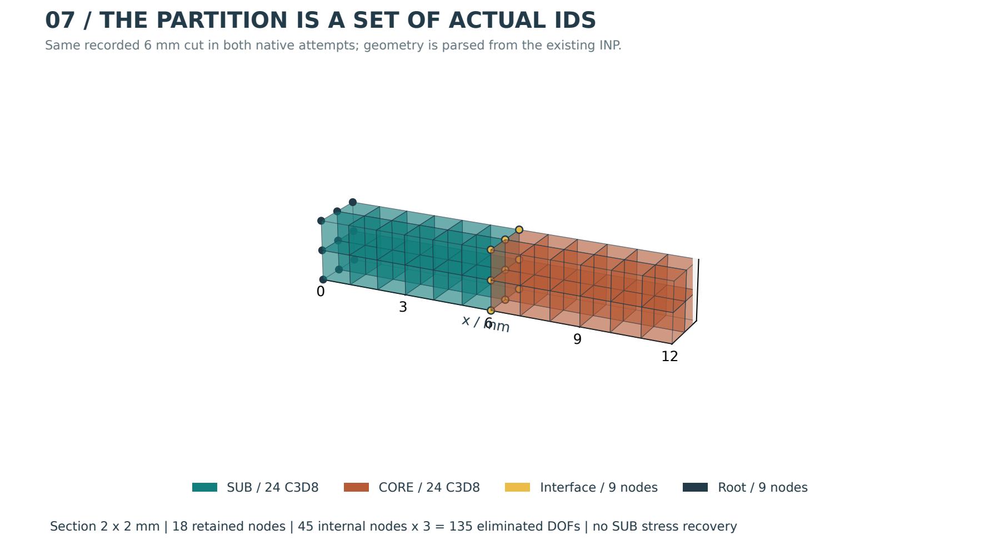
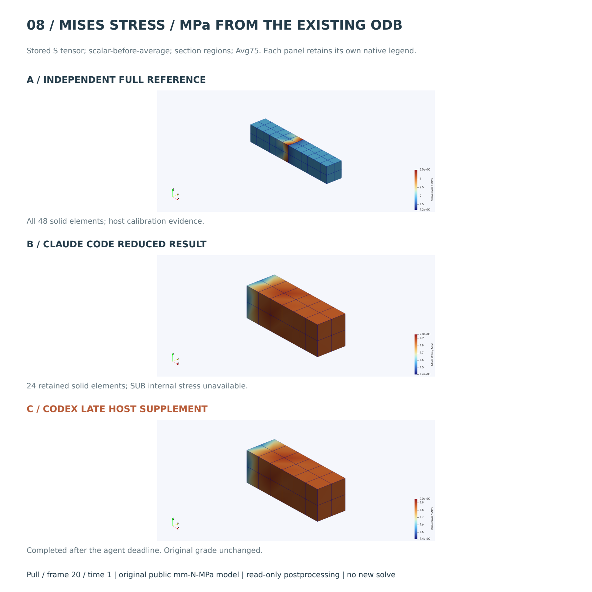
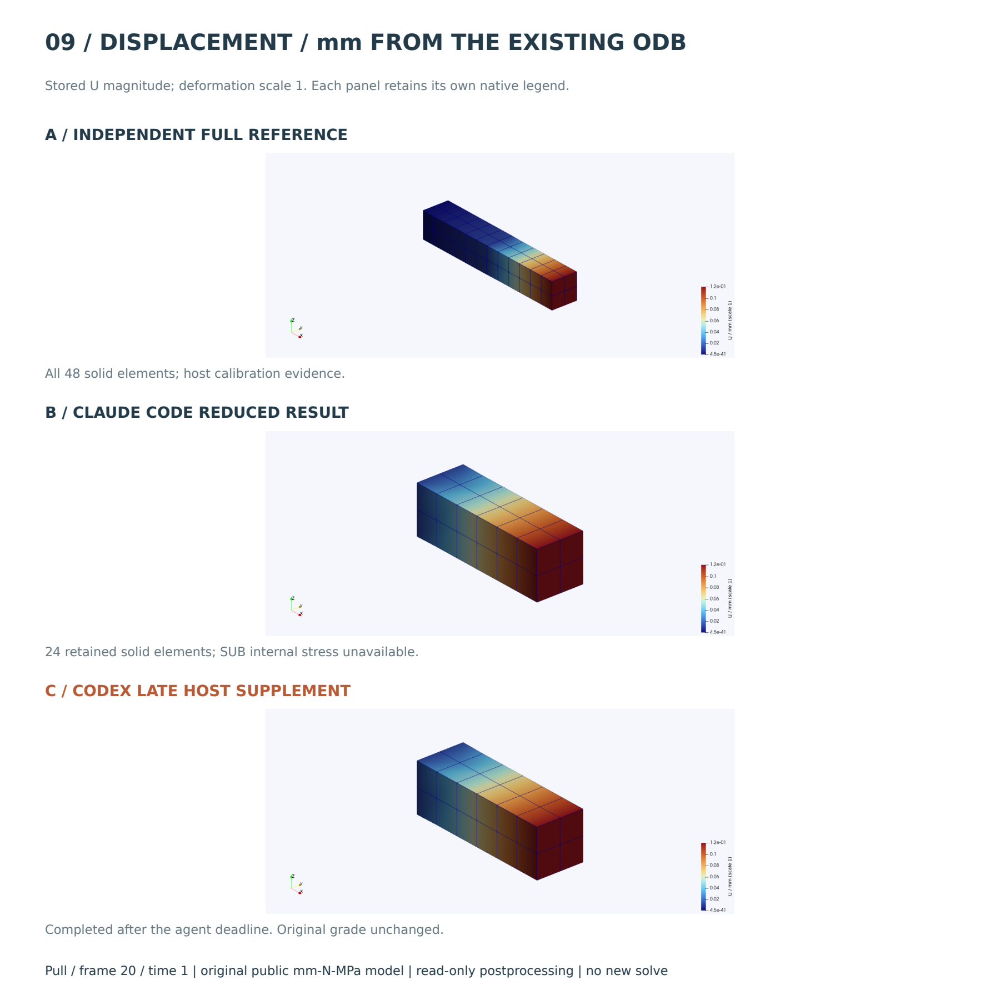

MECHANICS / OBSERVATIONS / PROVENANCE
逐步证据档案
从输入、决策和工具调用，到分区、求解日志、数值表格和真实云图，逐项追溯。全部 25 条保留记录均可阅读，包括启动失败。
此次只读后处理，不重跑、不改分数。七题为简化力学或证据题，仅 S04 使用真实 Abaqus。推理依据以 Agent 实际可见输出为准，不重建隐藏思维。



子结构使用 RECOVERY MATRIX=NO，内部应力未恢复，不以空白补零。Codex 超时后完成的云图仅为事后主机证据，不改为通过。原始 ODB/SIM/SUP 留在本地，公开包含图像、状态、数据和哈希。
所有案例
| Attempt | Status | Events | Artifacts |
|---|---|---|---|
| claude-code-S01-a1 | adapter_invalid | 7 | 0 |
| claude-code-S01-a2 | adapter_invalid | 7 | 0 |
| claude-code-S01-a3 | passed | 48 | 1 |
| claude-code-S02-a1 | passed | 52 | 1 |
| claude-code-S03-a1 | budget_exhausted | 65 | 1 |
| claude-code-S04-a1 | passed | 101 | 1 |
| claude-code-S05-a1 | failed | 55 | 4 |
| claude-code-S06-a1 | passed | 38 | 1 |
| claude-code-S07-a1 | protocol_ambiguity | 121 | 16 |
| claude-code-S08-a1 | passed | 43 | 1 |
| codex-native-S01-a1 | passed | 34 | 1 |
| codex-native-S02-a1 | adapter_invalid | 6 | 0 |
| codex-native-S02-a2 | passed | 22 | 1 |
| codex-native-S03-a1 | adapter_invalid | 6 | 0 |
| codex-native-S03-a2 | passed | 28 | 2 |
| codex-native-S04-a1 | adapter_invalid | 6 | 0 |
| codex-native-S04-a2 | environment_or_incomplete | 36 | 0 |
| codex-native-S05-a1 | adapter_invalid | 6 | 0 |
| codex-native-S05-a2 | passed | 35 | 4 |
| codex-native-S06-a1 | adapter_invalid | 6 | 0 |
| codex-native-S06-a2 | passed | 22 | 1 |
| codex-native-S07-a1 | adapter_invalid | 6 | 0 |
| codex-native-S07-a2 | passed | 27 | 2 |
| codex-native-S08-a1 | adapter_invalid | 6 | 0 |
| codex-native-S08-a2 | passed | 22 | 1 |
catalog.json · attempts.csv · postprocess/catalog.json · postprocess/mcp_trace.jsonl